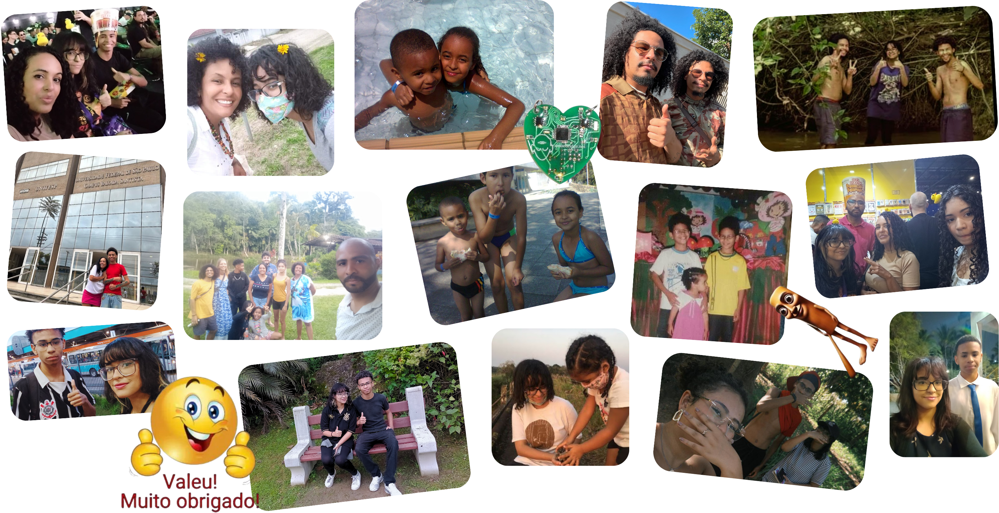
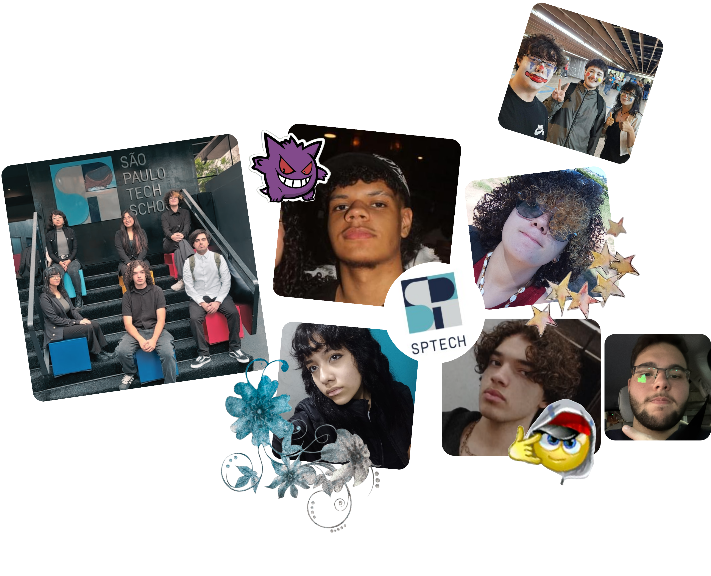

Mãe, obrigada pela ajuda com minha rotina e alimentação. Foi essencial para
que eu pudesse entregar um bom trabalho. Obrigada por sempre confiar em mim e me inspirar.
Theus, obrigada por estar presente e me fazer rir em momentos difíceis. Você
chega ser quase um colega.
Tia Mi, obrigada por ter me ensinado a olhar o mundo com mais amor e carinho.
Obrigada por me ensinar a ser grata.
B's, vocês trouxeram muitas referências durante meu crescimento e são como
irmãos pra mim. Obrigada por fazer a arte e criatividade tão presente na nossa família.
Eliza, talvez você não saiba mas tudo que eu faço, penso em você. Quero
tornar o mundo um lugar melhor com meus projetos para que você possa crescer e ser feliz.
Gui, obrigada por ter implantado a ideia de ser uma cientista maluca na minha
cabeça na infância. (Só não sabiamos que seria ciência da computação)
Marcelo, obrigada por todo apoio que você me deu durante o projeto e pelas
conversas que sempre são boas. Obrigada por apoiar minhas maluquices com sistemas

Agradeço a todos os professores que estiveram comigo nesse primeiro
semestre.
Marcos, Giuliana, Kaori, Brandão, Julia Araripe, Thiago Bonacelli, Rayssa, Thiago,
Matheus Matos, Clara e Vivian. Obrigada também à Ruth que sempre dá bom dia e tchau com gentileza.
Vocês são incríveis e mudaram minha vida.
Obrigada amigos do grupo 6 (Ceres). Somos, de fato, o grupo da amizade 🤍. Obrigada por todo o apoio e por me receberem tão bem. Vocês são pessoas maravilhosas e sou muito grata por tê-los na minha vida.
Matheus e Miguel, sou grata pelos momentos descontraídos e pelas risadas quando vamos embora juntos. Vocês são ótimos amigos e podem contar comigo quando precisarem de algo.
Gus, sou grata pela sua amizade. Obrigada por ser tão simpático comigo sempre
e deixar eu almoçar perto de você